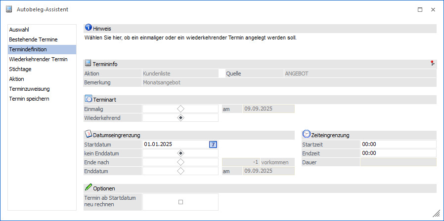
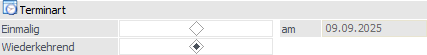
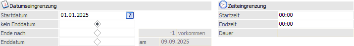
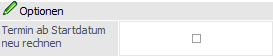

Im Bereich "Termindefinition" erfolgt die Definition der Terminart und deren Details (u.a. "Einmalig" oder "Wiederkehrend"). Hierdurch wird gesteuert, wann und wie oft ein Beleg mit der Funktion Autobeleg starten dupliziert werden soll.

Folgende Einstellungen und Information stehen in diesem Bereich zur Verfügung:
Termininfo

An dieser Stelle wird der aktuell gewählte Termin dargestellt. Alle weiteren Aktionen (z.B. Anwahl des Buttons "Start") und Änderungen erfolgt für diesen Termin.
Terminart

Ø Terminart
An dieser Stelle wird die Art des Termins definiert. Abhängig von dieser Auswahl stehen nachfolgende unterschiedliche Eingabefelder und Bereiche zur Verfügung.
ü Einmalig
Bei der Auswahl eines
einmaligen Termins kann im Feld "am" der Zeitpunkt der Aktion eingegeben werden.
Wird als Aktion ein "Termin" für den Telefonverkauf bearbeitet, so kann auch
eine Start- und Endzeit eingetragen werden.
Hinweis
Die Bereiche Wiederkehrende Termine und Stichtage stehen bei einem einmaligen Termin nicht zur Verfügung.
ü Wiederkehrend
Bei der Auswahl
eines wiederkehrenden Termins können u.a. Start- und Enddatum eingegeben
werden.
Datum- und Zeiteingrenzung

Ø Startdatum
Eingabe des Datums, ab dem die Aktion durchgeführt werden soll.
Ø Dauer
Mit Hilfe einer Radiobutton-Auswahl kann das Ende des Termins angegeben werden:
ü kein Enddatum
Diese Option
bewirkt, dass die Aktion nie automatisch endet. Zur Beendigung ist es notwendig,
dass die Zeile aus dem Aktionsplan gelöscht wird.
ü Ende nach ... vorkommen
Eingabe
der Anzahl, wie oft die Aktion durchgeführt werden soll.
ü Enddatum
Eingabe des Datums,
nach dem die Aktion nicht mehr durchgeführt werden soll.
Achtung
Bei der Erzeugung der Kalendereinträge zur Duplizierung (siehe Autobeleg starten) wird die Dauer entsprechend der gewählten Einstellung berücksichtigt (Termine werden anhand Intervall und Rhythmus gebildet). Wird "kein Enddatum" gewählt, so werden "nur" für das aktuelle Wirtschaftsjahr Einträge erzeugt um eine Endlosschleife zu vermeiden. Über das Programm Aktionsplan Autobeleg (Spalte "Rechnen") kann im neuen Jahr schnell und komfortabel eine Neuberechnung erfolgen.
Ø Zeiteingrenzung
Soll die Aktion im Bereich des Telefonverkaufs verwendet werden, so kann hierfür dem Termin auch eine Uhrzeit zugewiesen werden.
Optionen

Ø Termin ab Startdatum neu rechnen
Diese Option bewirkt, dass bei einer Änderung der Termindefinition, die Aktion ab dem Startdatum, auch rückwirkend, neu gerechnet wird.